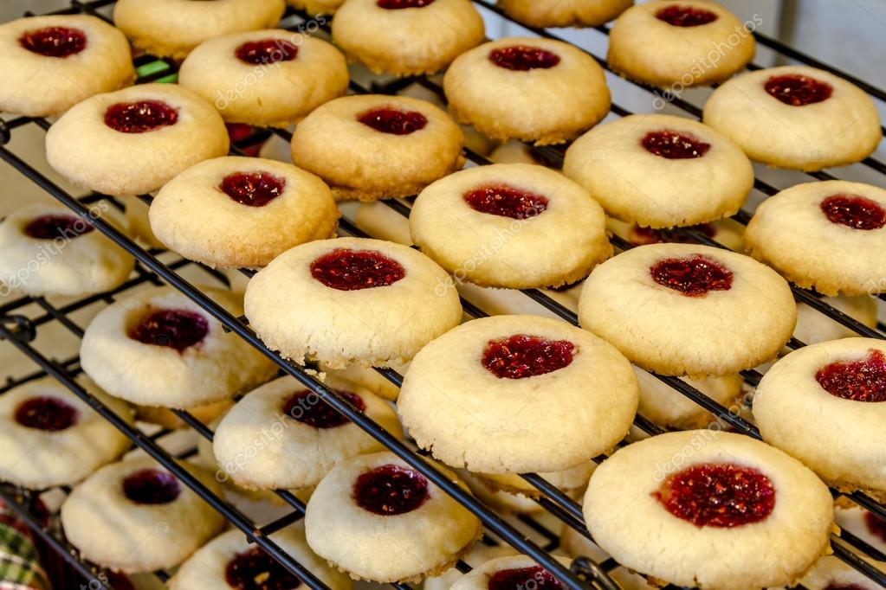

Jam filled butter cookies

Description
Thanks to MKHG for this recipe, now you can
also make the best cookies in town
This recipe considers a total of 36 cookies you can make in 40 mins
Ingredients:
- 3/4 cup butter, softened
- cup white sugar
- 2 egg yolks
- 1 - 3/4 cups all-purpose flour
- 1/2 cup fruit preserves, any flavor
Steps
- Step 1: Preheat the oven to 375 degrees F (190 degrees C).
- Step 2: In a medium bowl, cream together the butter, white
sugar and egg yolks. Mix in flour a little bit at a time until
a soft dough forms. Roll dough into 1 inch balls. If dough is
too soft, refrigerate for 15 to 20 minutes. Place balls 2
inches apart onto ungreased cookie sheets. Use your finger or
an instrument of similar size to make a well in the center of
each cookie. Fill the hole with 1/2 teaspoon of preserves.
- Step 3: Bake for 8 to 10 minutes in the preheated oven, until
golden brown on the bottom. Remove from cookie sheets to cool
on wire racks.